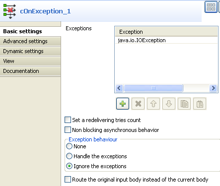
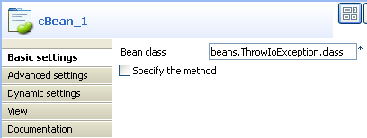
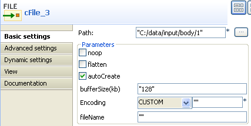
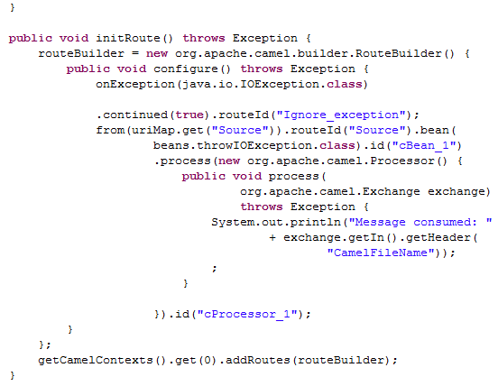
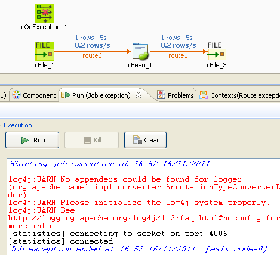

|
Famille de composant |
Exception | |
|
Fonction |
Le composant cOnException capture les exceptions définies afin de déclencher les actions souhaitées. | |
|
Objectif |
Le cOnException est conçu pour capturer les exceptions définies pour gérer les erreurs souhaitées. | |
|
Basic settings |
Exceptions |
Cliquez sur le bouton [+] pour ajouter autant de lignes que nécessaire dans la table pour définir les exceptions à capturer. |
|
Set a redelivering tries count |
Cochez cette case pour saisir le nombre maximal de tentatives de livraison dans le champ Maximum redelivering tries. | |
|
Non blocking asynchronous behavior |
Cochez cette case pour ne pas bloquer le comportement asynchrone. | |
|
Exception behavior |
None : sélectionnez cette option pour n'effectuer aucune action sur la route originale. Handle the exceptions : sélectionnez cette option pour gérer les exceptions et rompre la boucle de traitement en cours afin de gérer l'exception séparément. Ignore the exceptions : sélectionnez cette option pour ignorer les exceptions et continuer le routage de la route originale. | |
|
Route the original input body instead of the current body |
Cochez cette case pour router le message original au lieu du message courant, qui peut être changé durant le routage. | |
|
Utilisation |
Le cOnException est généralement utilisé comme un composant standalone dans une sous-route. | |
|
Limitation |
n/a | |
Dans ce scénario, un composant cOnException est utilisé pour ignorer une exception IO retournée par un bean Java afin que le message soit routé avec succès vers sa destination, malgré l'exception.
Glissez-déposez ces composants de la Palette dans l'espace de modélisation graphique : un cOnException, un cFile, un cBeanet un cProcessor.
Reliez le cFile au cBean à l'aide d'un lien Row > Route.
Reliez le cBean au cProcessor à l'aide d'un lien Row > Route.
Renommez les composants comme vous le souhaitez pour mieux identifier leur rôle dans la Route.
Double-cliquez sur le composant cOnException nommé Ignore_exception pour ouvrir sa vue Basic settings.
Cliquez sur le bouton [+] pour ajouter une ligne dans la table Exceptions et configurer l'exception à capturer. Dans cet exemple, saisissez
java.io.IOExceptionpour gérer les exceptions IO.Dans la zone Exception behavior, sélectionnez l'option Ignore the exceptions pour ignorer les exceptions et continuer le routage du message. Laissez les autres paramètres tels qu'ils sont.
Double-cliquez sur le composant cFile nommé Source, pour ouvrir sa vue Basic settings.

Dans le champ Path, saisissez le chemin d'accès à la source du message et laissez les autres paramètres tels qu'ils sont.
Double-cliquez sur le composant cBean nommé Throw_exception pour ouvrir sa vue Basic settings.
Sélectionnez New Instance et, dans le champ Bean class, saisissez le nom du bean devant retourner une exception IO, beans.throwIOException.class dans ce scénario.
Remarquez que ce bean a déjà été défini dans le nœud Code du Repository. Il se présente comme suit :
package beans; import java.io.IOException; import org.apache.camel.Exchange; public class throwIOException { /** * @throws IOException */ public static void helloExample(String message, Exchange exchange) throws IOException { throw new IOException("An IOException has been caught"); } }Dans le champ Bean class, sélectionnez New Instance et saisissez le nom du bean pour retourner une exception IO exception, beans.throwIOException.class dans ce scénario.
Notez que ce bean a déjà été configuré dans le nœud Code de la vue Repository et ressemble à ceci :
package beans; import java.io.IOException; import org.apache.camel.Exchange; public class throwIOException { /** * @throws IOException */ public static void helloExample(String message, Exchange exchange) throws IOException { throw new IOException("An IOException has been caught"); } }Pour plus d'informations concernant la création et l'utilisation des Beans Java, consultez le Guide utilisateur de Talend Open Studio for ESB.
Double-cliquez sur le composant cProcessor nommé Monitor pouur ouvrir sa vue Basic settings.
Dans la zone Code, personnalisez le code pour afficher le nom du fichier du message consommé dans la console de la vue Run :
System.out.println("Message consumed: "+ exchange.getIn().getHeader("CamelFileName"));Appuyez sur Ctrl+S pour sauvegardez votre Route.
Cliquez sur l'onglet Code au bas de l'espace de modélisation graphique pour visualiser le code généré.
Comme affiché ci-dessus,
Ignore_exceptiongère toute exception IO retournée par.bean(beans.throwIOException.class)invoqué par lecBean_1, afin que les messages de l'(from) endpointSourcepuissent être routés avec succès (continued(true)) malgré l'exception.Appuyez sur F6 pour exécuter la Route.
La route est exécutée avec succès et les fichiers de la source sont bien routés vers leur destination.
Modifiez l'option de gestion des exception dans le composant cOnException ou désactivez le composant et exécutez la Route à nouveau.
L'exception retournée par le bean Java empêche les messages d'être correctement routés.